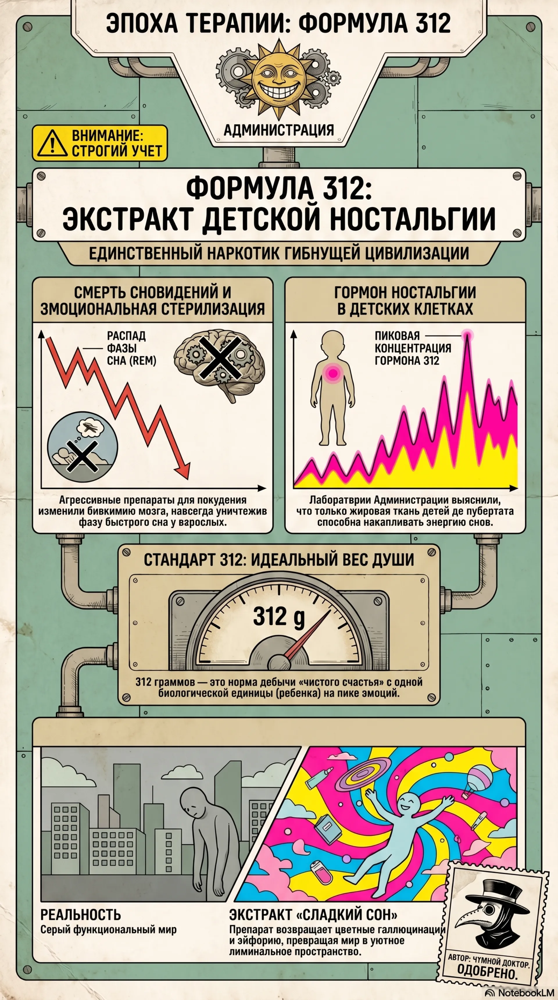
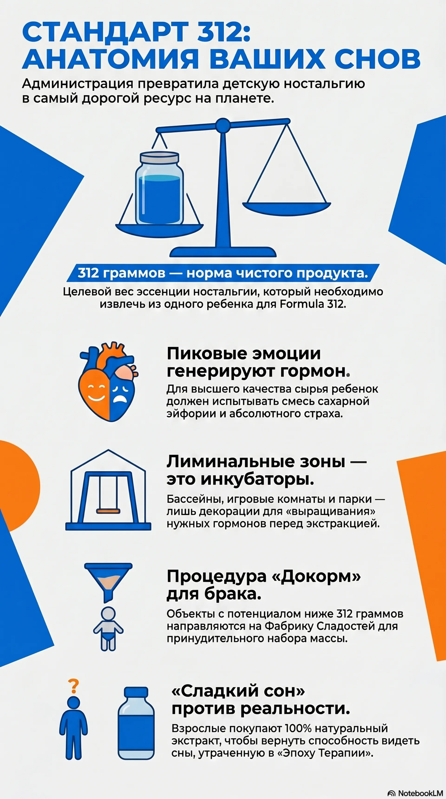
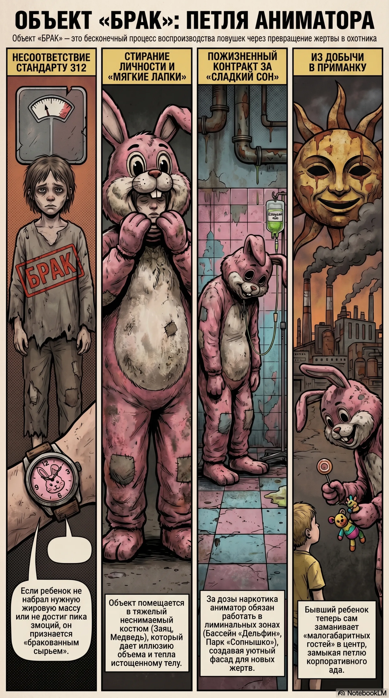

Анна М.
«Потрясающее место! Дети в восторге от бассейна. Правда, шарики на самом дне почему-то мягкие и пульсирующие, но малышам это даже нравится. Обязательно вернемся!»
[СЛУЖЕБНОЕ ПРЕДУПРЕЖДЕНИЕ] Несанкционированный доступ в закрытый контур.
Уютные аллеи, мягкий свет и бесконечная музыка игр.
Следуйте указателям, улыбайтесь и пожалуйста...Соблюдайте правила.
Дядя Улыбарыч, Семейные тайны и Правильный ответ
Эксклюзивные архивы и лучшие эфиры. Только в ТЦ Детский ЖИР
Поздоровайтесь с Лосем у входа и выберите маршрут для всей семьи.
Наши животные не живут в клетках. Они просто очень любят оставаться на работе.
Самый популярный аттракцион этого года.
Спроси ассистента ТЦ Детский ЖИР, как найти вход в аквапарк.
Сладкая вата, карусели и лучшие аниматоры.
Улыбнись парку Солнышко, и оно обязательно улыбнется в ответ.
Первый в мире этичный бесконтактный зоопарк без клеток и без лишних вопросов.
Идеальная тишина, теплая розовая вода и дорожка, на которую лучше не смотреть.
Радость, смех, вечные сумерки и классические аттракционы для всей семьи.
Ночные сеансы, бархатные шторы и теплое свечение старого проектора.
Огромный магазин из детства, где полки уходят в небо, а любимая игрушка уже ждет.
Тихий столик, старая пластинка, чертовски хороший кофе и выход за шторой.
«Потрясающее место! Дети в восторге от бассейна. Правда, шарики на самом дне почему-то мягкие и пульсирующие, но малышам это даже нравится. Обязательно вернемся!»
«Очень чистый центр. Персонал всегда улыбается. Идеально ровные, немигающие улыбки. Забыли куртку в лабиринте, а на выходе гид уже держал её в руках, хотя мы его там не видели. Сервис на высоте!»
«Всё чудесно, привели Костю в парк аттракционов, как просила администрация. Ребенок в восторге!!! Вход был бесплатным. С выходом были небольшие проблемы. Костя остался в качестве залога!!! Дай бог здоровья аниматорам центра!!!»
Статус: Обнаружено движение в вольере 4.
Статус: Механизм запущен (Автономно).
Статус: Изменение объема биомассы.
ДОСТУП В АРХИВ ОГРАНИЧЕН
Введите код авторизации для доступа к протоколам:
ОШИБКА: НЕВЕРНЫЙ КОД
ДОСТУП РАЗРЕШЕН. ЗАГРУЗКА ПОСЛЕДНИХ ФАЙЛОВ...

FILE_089: PROTOCOL_B
FILE_091: STATS_ANOMALY
FILE_094: OBJECT_VIEW